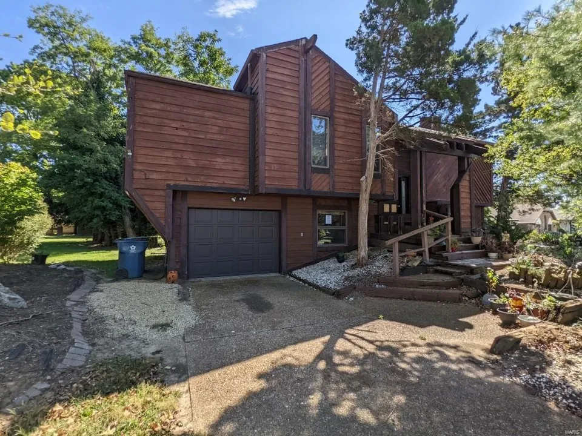
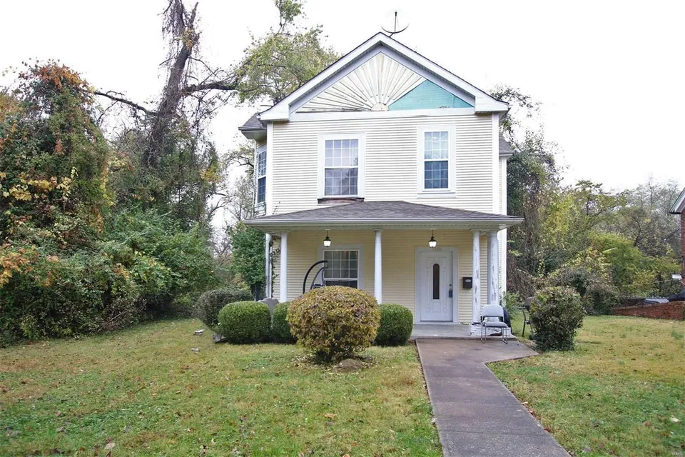
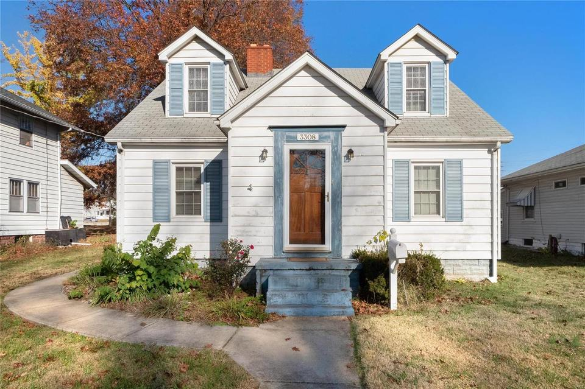
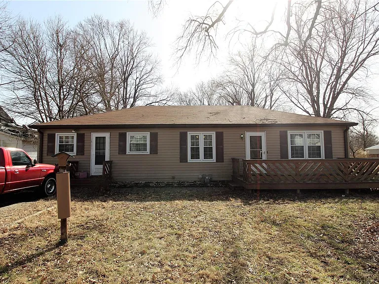
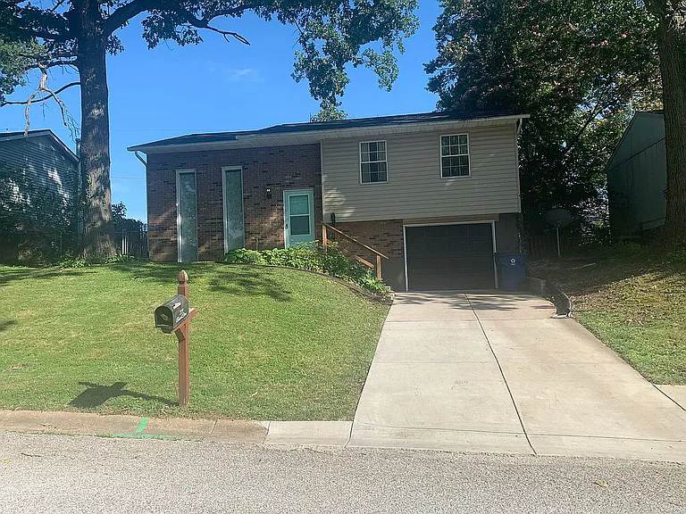
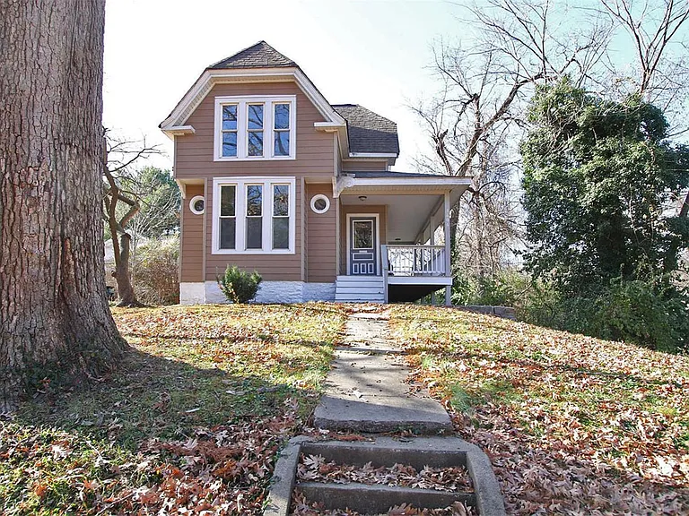
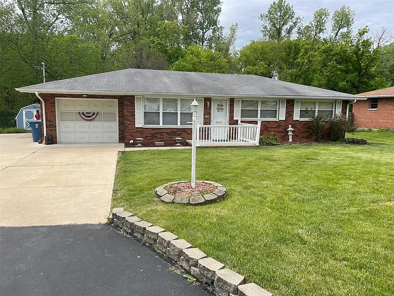
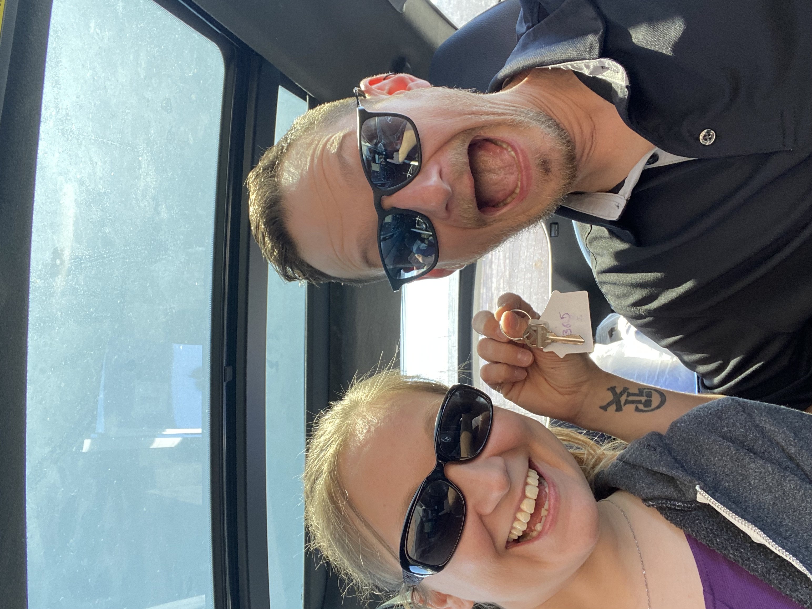

Muny Vista aka Ship House aka Termite House 
This was the first house I found in our budget. I loved the unique design. It reminded me of a pirate ship. When I contacted Zillow, I got paired up with our new realtor, Jackie Sumpter. She immediately told us that the house was completely infested with termites and would be way more work than we were looking for. Not completely encouraging to start out, but meeting Jackie would prove to be fate!
East 14th Street aka The Smelly House
Here is where we finally met Jackie in person after only talking on the phone. I loved the house's vintage feel but there were a ton of red flags in the pictures. It turned out to be a rainy day so I expected it to be a bit musty since it had an original 1800's basement. When we got inside it didn't look terrible, but the smell was so overpowering that we only spent about 3 minutes inside. We spent the next half hour getting to know each other standing in the freezing rain outside rather than stand in the stench. Needless to say, next...
Jackson Street aka Popsicle House
This house still makes me sad. It had such charm and potential. However, as soon as we entered there was an old popsicle stick stuck to the floor and dirty laundry all over (I didn't expect HGTV shown houses in this market but come on!). The whole house was neglected and abused from start to finish. A good craftsman could really make this house sing, but it was so obviously not maintained we just couldn't take the risk.
Brackett Street aka It Could Work I Guess...
This house was being rehabbed by the current owner who was doing a descent job. It still needed lots of TLC but it technically checked all our boxes. The real deal-breaker was the neighborhood. If I could have picked this house up and moved it somewhere else, we may have tried to make it work. More importantly, this is where Jackie mentions a house that might be perfect for us that she will be selling for a friend's family soon (stay tuned!).
Admiral Drive aka Not the Neighborhood For Us
As soon as we turned on this street we knew the neighborhood was probably not going to work. To make things more awkward, it was for sale by owner so I had to be careful to keep my thoughts to myself. Again, the house itself could technically work as it checked all the boxes but one of the major reasons for moving was for a quieter neighborhood. Next...
Annex St aka Definitely Haunted But That Barn!
This house was one bedroom short but it had been completely rehabbed and had a huge 2.5 story barn that had the potential to be converted into the missing workspace we need at home. It was most definitely haunted but it had so much charm. When we got in the barn it was clear that it would take way too much money to make it safe for computer equipment. Since we got done with this house early, Jackie asked her friend if we could pop in to see the house she had in mind for us and they were available!
Mission Rd aka Could This Really Be It??
We hadn't planned to go here and it was still full of the previous owner's things but it was clear the second we walked in that we wanted this house. By the time we got to the finished basement, we were downright giddy. We found our house! They only problem, it's not for sale yet.We waited for what seemed like an eternity until they were finally ready to talk about a contract. I was terrified they would take it to market and we would lose it. There was also a cash buyer interested. We were eventually able to make an offer that avoided the house going to market (avoiding any possible bidding wars), that was only slightly over my planned budget.
♥ There's No Place Like Home! ♥

The owner's asked for a 45 day closing to get all the belongings cleaned out and during the mortgage process, we discovered the house is on a super high-risk flood plain. We were apprehensive to celebrate in case something fell through. But sure enough, closing day came and everything went off without a hitch! We got the keys by 10:30am and immediately came to get to work. By the next Friday, we were staying here! We still have a million projects to tackle but we are beyond happy! There's just no place like home!